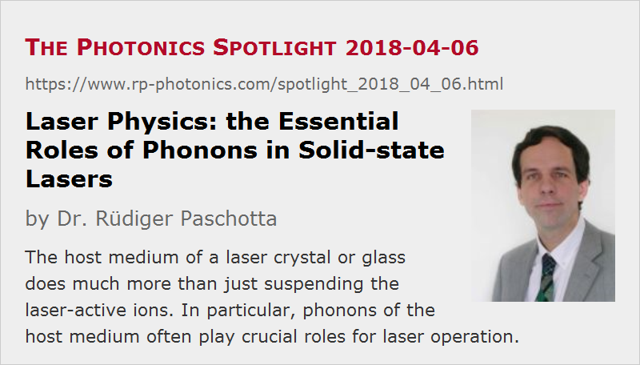

Laser Physics: the Essential Roles of Phonons in Solid-state Lasers
Posted on 2018-04-06 as a part of the Photonics Spotlight (available as e-mail newsletter!)
Permanent link: https://www.rp-photonics.com/spotlight_2018_04_06.html
Author: Dr. Rüdiger Paschotta, RP Photonics Consulting GmbH
Abstract: The host medium of a laser crystal or glass does much more than just suspending the laser-active ions. In particular, phonons of the host medium often play crucial roles for laser operation.

Solid-state lasers are mostly based on doped insulators, i.e., transparent media which are doped with laser-active ions like Nd3+, Yb3+, Er3+ or Ti3+. At a first glance, one may think that the host medium is not much more than a means for suspending those laser-active ions, itself not being actively involved in the optical processes of laser amplification. Well, it is widely known that the strength and spectral width of optical transitions can substantially depend on the gain medium due to influences of the host medium on the laser-active ions, but that is usually just seen as a modification of the ions' properties rather than an active participation of the host medium. Beyond that, one often only considers the transport of the generated waste heat (thermal conduction). Here, I like to emphasize that the host medium actually plays a substantially more active role in the laser process – partly due to phonons, i.e., lattice vibrations, which do much more than only transporting heat.
Thermalization and Lifetime Broadening in Stark Level Manifolds
Isolated laser-active ions have groups of energy levels, called Stark level manifolds, where the level energies are nearly or exactly the same within each such manifold. The electric and magnetic fields to which the ions are exposed when sitting inside a laser crystal or glass lead to substantial differences in those level energies, which are essential for the observed spectral broadening of optical transitions.
Phonons (lattice vibrations) now have substantial further effects on those level manifolds. They introduce rapid random transitions between all sub-levels within a level manifold: if you optically pump an ion into a certain sub-level, it takes only picoseconds for the ion to get into one of the other sub-levels. In fact, those phonon-mediated transitions lead to rapid thermalization within the manifold: within picoseconds, the distribution of level populations within the manifold will be determined by the well known Boltzmann distribution, according to which the higher-lying levels have lower populations, particularly at low temperatures.
Only because of that rapid thermalization, we can extensively work with effective transition cross sections. Those describe optical transitions between two level manifolds and are based on the assumption that the distribution of level populations within each level manifold is fixed, i.e., not dependent on the pumping history.
In addition to thermalization, we also get substantial lifetime broadening of the level energies. Even if an excited level manifold itself has a rather long lifetime (e.g. several milliseconds), which does not cause any significant spectral broadening, we do get strong spectral broadening due to the rapid transitions within the manifold. In that way, phonons also substantially determine the spectral shapes of optical transitions.
Multi-phonon Transitions
A crucially important contribution of phonons to laser operation is related to fast non-radiative transitions between different Stark level manifolds, which are associated with multi-phonon emission. Here, the energy gap to be bridged is generally too large for the emission of a single phonon, but there are higher-order processes involving multiple phonons. The rates of such processes rapidly decreases as the number of involved phonons increases, but as long as only few phonons are required, such processes can still be quite fast, working e.g. on a time scale of a few microseconds. Where twice as many phonons would be required, the process would already be weaker by many orders of magnitude.
As an example for the crucial role of multi-phonon transitions in solid-state lasers, we consider the common laser crystal material Nd:YAG (see Figure 1). After excitation of a Nd ion with an 808-nm pump photon, the ion is rapidly transferred into the upper laser level manifold (4F3/2) by multi-phonon emission. If we did not have that process (e.g. for an Nd ion flying around in vacuum), we could only hope for spontaneous emission processes – but those would dominantly bring the ions to lower-lying levels, and the excitation energy would be lost for the laser process! The problem is that spontaneous emission processes with higher frequencies are stronger, essentially because an oscillating dipole radiates more power if its frequency is higher. Therefore, without the help of the gain medium we would have to directly pump into the upper laser level – and that, by the way, with a very narrow-band pump source, as we would not have the convenient spectral broadening by phonons.
A further problem would result after the laser transitions. For example, the common 1064-nm transition ends in the 4F11/2 manifold, where it would stay for a longer while if we did not have phonons rapidly pushing it down to the ground state manifold. That would not only mean that some significant fraction of the ions would lazily hang around in the lower laser level rather than participating in further emission processes – there would even be reabsorption on the laser transition, reducing the laser gain.
At the same time, we do not have significant multi-phonon quenching by such processes starting from the upper laser level, because luckily we have a too large energy gap for that below that level. So in this case the phonons do exactly what helps us while avoiding any unwanted quenching.
Those explanation should have made it clear that the rather efficient laser operation we can achieve in many solid-state lasers is crucially dependent on phonon-mediated processes. It is by far not only that phonons lead to broader transitions, enabling more convenient pumping and possibly some tunability of the laser wavelength. Many lasers could simply not work at all without the phonons. Isn't it surprising that nevertheless they often forgotten?
Detrimental Effects of Phonons

Unfortunately, in some cases we can have negative influences of phonons. In particular, I think about unwanted multi-phonon processes which bypass laser transitions. As an example, consider thulium-doped media. Only when using relatively expensive and fragile Tm:ZBLAN glass, we can realize an upconversion laser which is pumped in the infrared and emits blue light (see Figure 2). The same thing would not work at all with Tm:YAG, since the lifetimes of the involved excited state manifolds would be strongly reduced by multi-phonon transitions. (That holds in particular for 3F2−4.)
Such problems are also quite common for mid-infrared lasers. For the emission of such long-wavelength light, we inevitably need relatively closely spaced levels for the laser transition, and those then tend to be bridged by multi-phonon emission. One can mitigate or solve that problem by using a host medium with low phonon energy. However, one should then not rely on the efficient bridging of larger energy gaps in the laser process. One can easily get into problems with self-terminating laser transitions, for example.
If you think that such articles would also be useful for your colleagues, be so kind to tell them about the Photonics Spotlight!
This article is a posting of the Photonics Spotlight, authored by Dr. Rüdiger Paschotta. You may link to this page and cite it, because its location is permanent. See also the RP Photonics Encyclopedia.
Note that you can also receive the articles in the form of a newsletter or with an RSS feed.
Questions and Comments from Users
Here you can submit questions and comments. As far as they get accepted by the author, they will appear above this paragraph together with the author’s answer. The author will decide on acceptance based on certain criteria. Essentially, the issue must be of sufficiently broad interest.
Please do not enter personal data here; we would otherwise delete it soon. (See also our privacy declaration.) If you wish to receive personal feedback or consultancy from the author, please contact him e.g. via e-mail.
By submitting the information, you give your consent to the potential publication of your inputs on our website according to our rules. (If you later retract your consent, we will delete those inputs.) As your inputs are first reviewed by the author, they may be published with some delay.
|  |
If you like this page, please share the link with your friends and colleagues, e.g. via social media:
These sharing buttons are implemented in a privacy-friendly way!